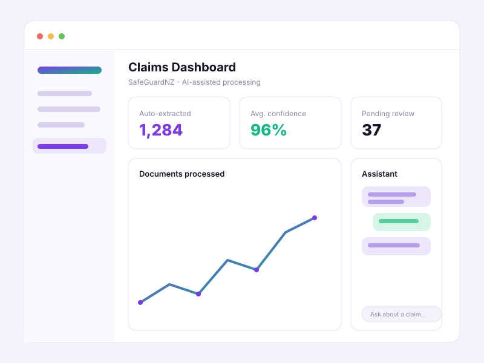

🏆 1st Place
SafeGuardNZ — AI Insurance Claims Platform
- Problem
- The client processes thousands of insurance claims a month, each needing manual review of several document types. The team was bogged down re-keying data and validating policies by hand — slowing decisions and hurting customer experience. AWS was already in use for secure document storage, so the brief was to automate classification, extraction and validation while keeping a human in the loop for low-confidence cases.
- Stack
- Amazon Textract (document OCR), Amazon Bedrock (LLM reasoning) and custom ML models for financial data extraction with confidence scoring; Node.js / Express REST API; MongoDB Atlas; AWS Cognito for auth; deployed on AWS Amplify.
- My contribution
- Led the five-person team (“Ministry of Iced Tea”) and architected the multi-layer AI system; built the Node.js/Express backend and REST API layer and the auth/data integrations. Delivered guided document upload, real-time extraction of dates & amounts, a confidence-score agent that flags key issues for reviewers, an admin dashboard, automated email notifications and a floating AI support chatbot. Presented to AWS engineers and business stakeholders at the AWS Auckland offices.
- Outcome
- Won 1st place — selected as the 2025 Semester Two winner of the UoA × AWS Innovation Challenge internship. The platform cuts back-and-forth review time, eliminates manual calculation errors, and scales to handle claim-volume spikes.